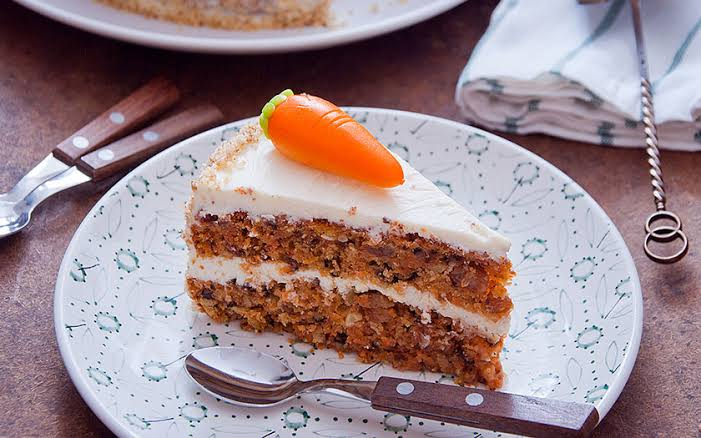

Torta de Zanahoria con Frosting de Queso Crema

La torta de zanahoria es un clásico de la repostería que combina la dulzura natural de la zanahoria con especias aromáticas y una suave cobertura de queso crema. Su interior húmedo y esponjoso contrasta perfectamente con el frosting cremoso, convirtiéndola en un postre ideal para celebraciones, meriendas o simplemente para disfrutar en casa..